The idea for this map gradually emerged while I was reading "Raw Spirit: In Search of the Perfect Dram" by Iain Banks, in which he travels around Scottish whisky distilleries. To follow the author’s journey across lochs, fjords, and sounds, I often googled the places he described. This became increasingly frustrating as I wanted to quickly navigate the distilleries and the winding routes to them, which is not particularly convenient on Google Maps, where the distilleries are minor elements visible only on low zoom levels. At the same time, the narrative in the book was tangible enough to browse across a detailed map while reading and chart a route with a pencil (for future travels, of course).
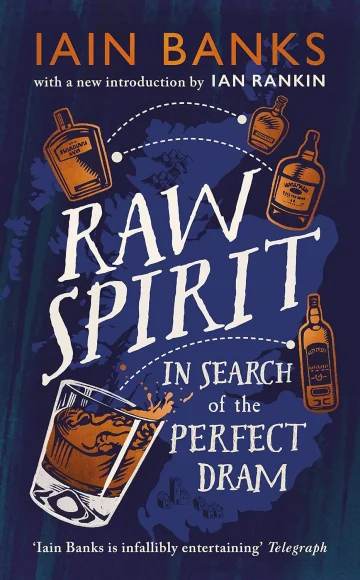
The existing maps are mostly cluttered with numbered icons and huge legends where one had to search for these numbers. Dissatisfied with them, I decided to create a map of my own. During the process, I had the notion to transform humble leading lines into decorative features, which ultimately took centre stage in the map's aesthetic.
(Besides, with no particular reason, I wanted to create a medium-sized poster map in a soft blue-and-golden colour scheme and hang it on a wall in black magnetic frames. Don’t ask.)
About
the process
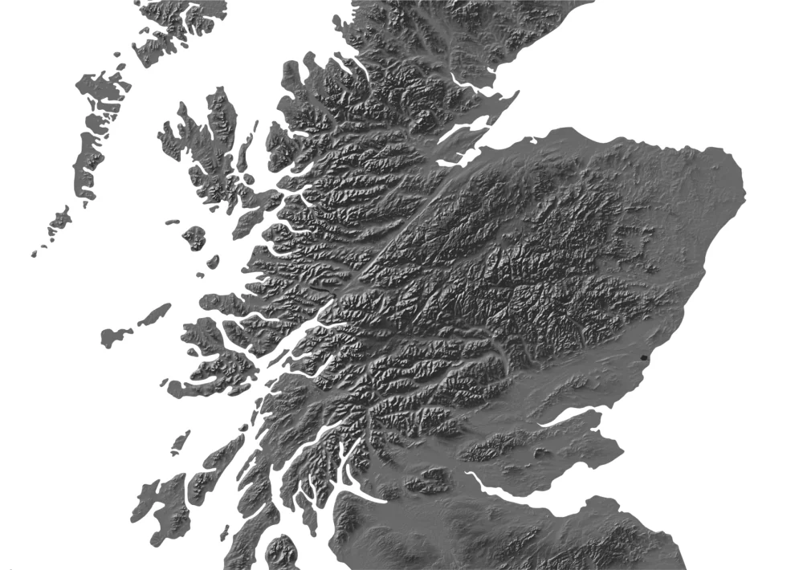
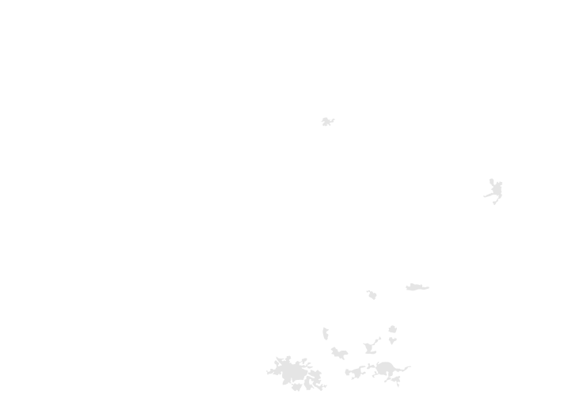
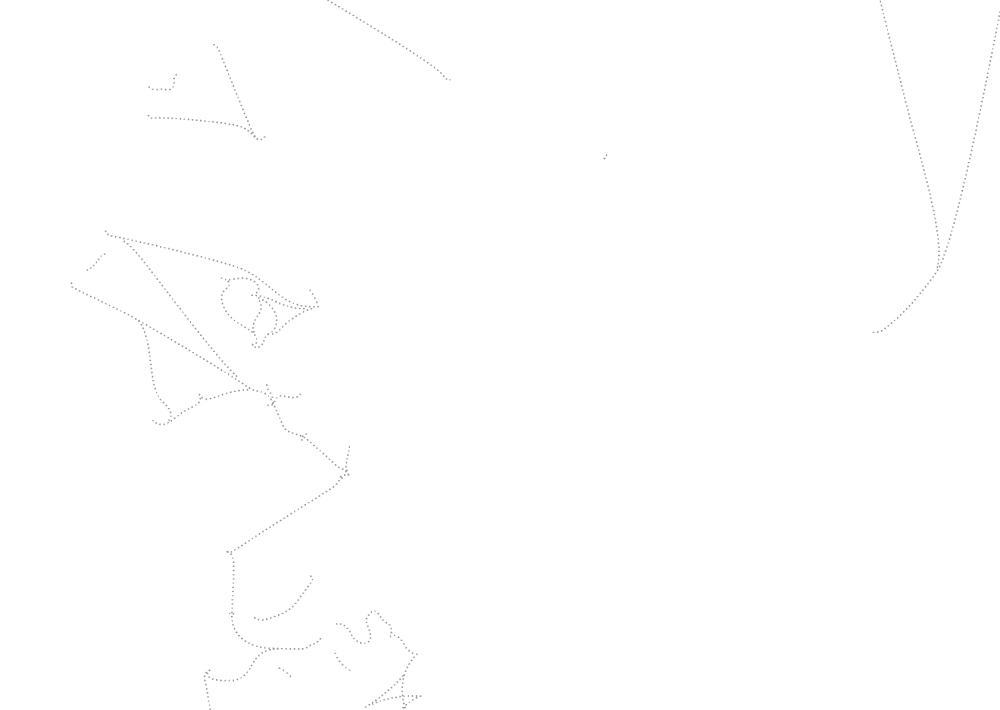
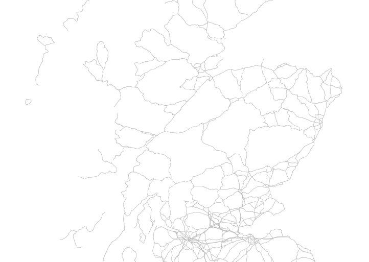
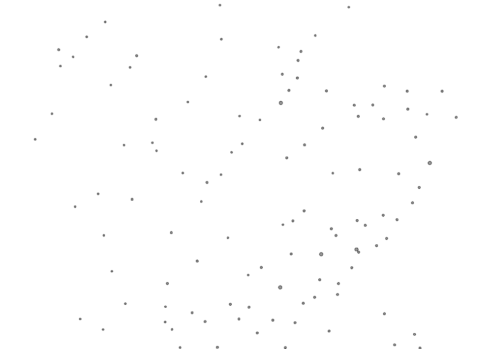
A map starts with data collection. The subject is clear - there is a countable number of distilleries, and new ones do not appear daily. It is handy to use some official register to refer to, for instance, this one:
List of currently operating distilleries by Scotch Whisky Association
Next, it is not problematic to append geographical coordinates, year of commissioning, company-owner, etc. from thematic sites on the list items. The relevant information is often represented in a table view; therefore it is well-structured and easy to parse. I mainly used the following resources:
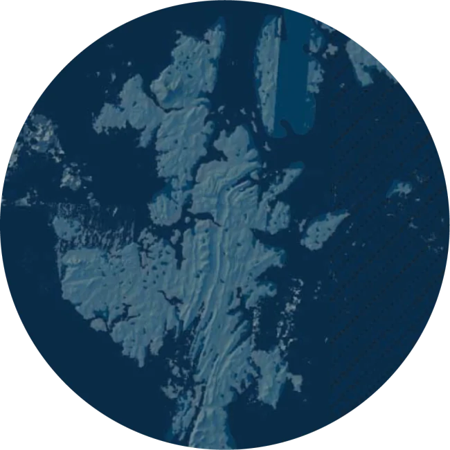
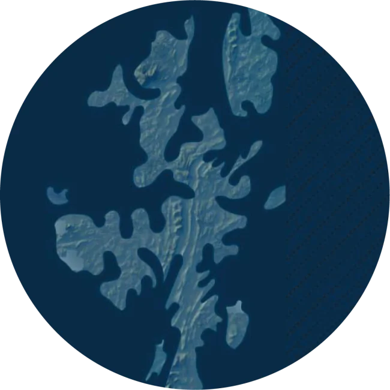
Printed maps are demanding in terms of quality of geodata and its generalisation: on paper, flaws are immediately apparent. Therefore all the geographical layers needed manual editing to eliminate geometry errors in such a way that roads are parallel to rivers, not intertwined, and generalisation level is consistent for all the layers. The relief had to be refined (=manually drawn) in some areas: for instance, on the Shetland Islands, patches from Arctic DEM do not fully cover the gaps in SRTM 30m elevation model.
ArcticDEM
ArcticDEM is an initiative to create a detailed digital elevation model of the Arctic from hundreds of thousands of Maxar satellite images with a submeter resolution. The data used here was acquired in 2007–2022 during the summer seasons. The project is led by the Polar Geospatial Center at the University of Minnesota.
SRTM
The Shuttle Radar Topography Mission collected topographic data over nearly 80% of Earth’s land surfaces, excluding polar regions, creating the first near-global elevation dataset. The 30 m resolution version was released in 2013. The project is led by the U.S. National Geospatial-Intelligence Agency and NASA.
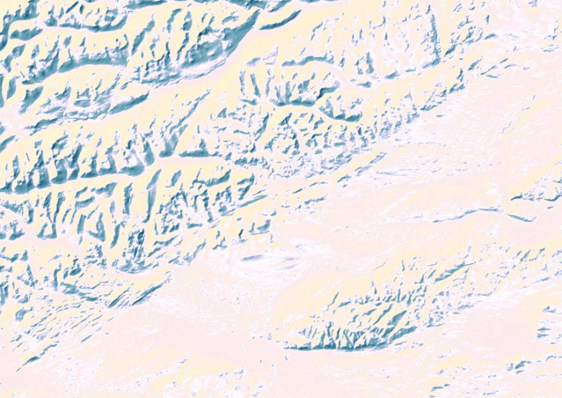
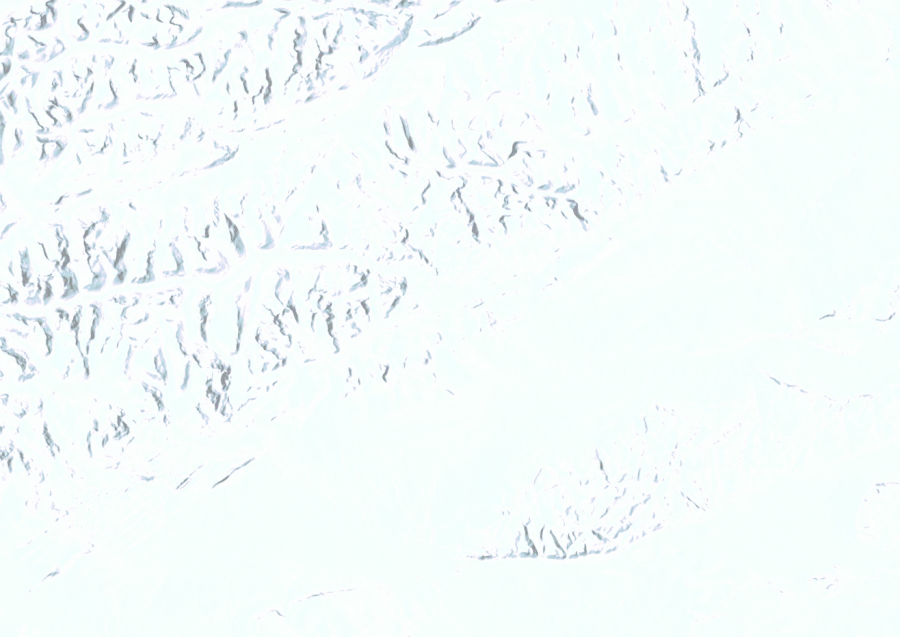
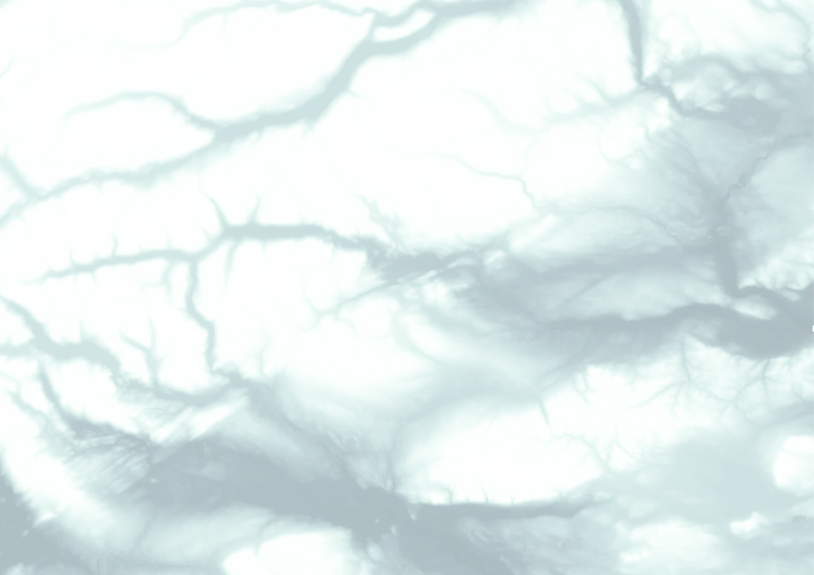
Visually, I meant to keep the relief ductility and imitate a slightly old-fashioned feel of mountain ridges and valleys so they are warmly highlighted and don’t look too digital. The technique is eventually simple (borrowed from John Nelson): the terrain here is a four layer-pie where a solid fill land polygon is overlaid with a traditional hillshade coloured in a gradient from golden to blue; upon that lies a multidirectional hillshade; and a semi-transparent delicate mist is spilled over valleys and lowlands to give this terrain a certain depth.
When compiling the network of roads and towns, I initially meant for a map reader to be able to unambiguously plot a route to each distillery. However, firstly, they are often tucked away in snug places at the ends of tiny local roads and adding these roads to the map makes the density of information weirdly uneven. Secondly, because the distilleries are clustered, especially in Speyside and, partly, on Islay, some icons are merged and slightly displaced relative to their actual location. Nevertheless, I felt it was important to maintain a general idea of the transport access and connectivity of the sites, so all major roads and ferry routes are matched and in place.
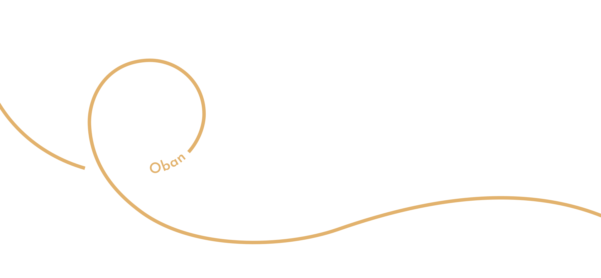
Existing distillery maps do show the outlines of whisky regions, but their boundaries seem a bit dubious to me. Especially the valley of the River Spey, the course of which, if you check several versions of the Speyside outline, regularly changes its position several dozen miles in either direction. For this reason, and in order not to overload the map with optional layers, I thought it would be more justified to show the belonging of each distillery to a whisky region. The lines that lead from the distilleries’ locations to their names are in the colours of the corresponding regions and, by their appearance, resemble the outlines of glencairns (or their wet prints on tablecloth).
To complete the creative experiment, all that is left is to print a map on velvety paper, hang it in a prominent spot and browse for the place where a freshly bought (or presented) bottle of scotch is produced. Or – to plan the next holiday.
Sláinte!